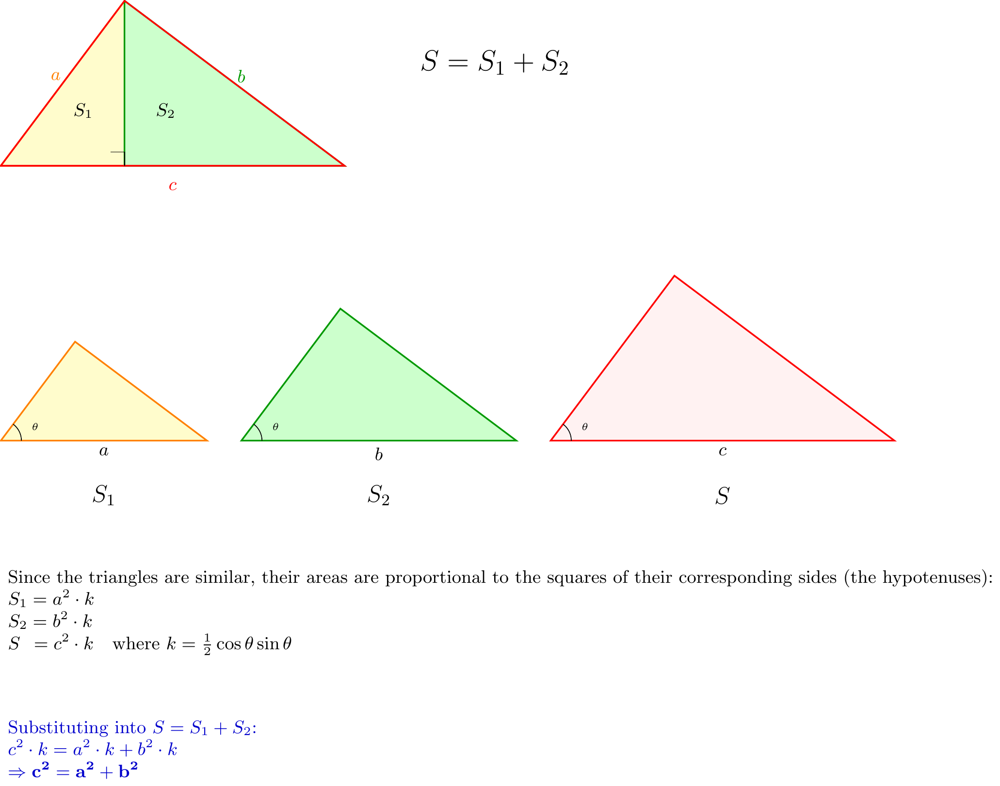
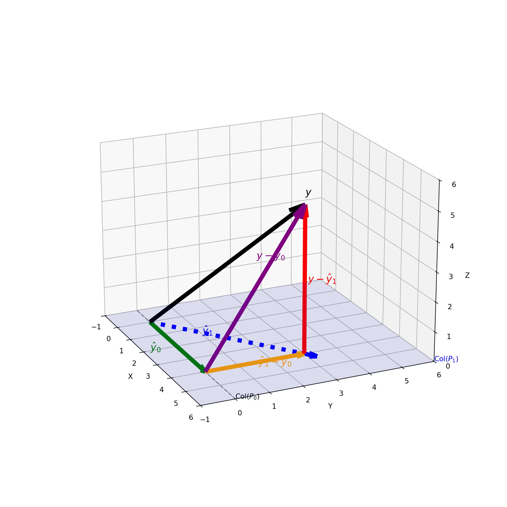

2 Projection in Vector Space
2.1 Vector and Projection onto a Line
2.1.1 Vectors and Operations
The concept of a vector is fundamental to linear algebra and linear models. We begin by formally defining what a vector is in the context of Euclidean space.
Definition 2.1 (Vector) A vector \(x\) is defined as a point in \(n\)-dimensional space (\(\mathbb{R}^n\)). It is typically represented as a column vector containing \(n\) real-valued components:
\[ x = \begin{pmatrix} x_1 \\ x_2 \\ \vdots \\ x_n \end{pmatrix} \]
Vectors are not just static points; they can be combined and manipulated. The two most basic geometric operations are addition and subtraction.
Vector Arithmetic: Vectors can be manipulated geometrically:
Definition 2.2 (Vector Addition) The sum of two vectors \(x\) and \(y\) creates a new vector. The operation is performed component-wise, adding corresponding elements from each vector. Geometrically, this follows the “parallelogram rule” or the “head-to-tail” method, where you place the tail of \(y\) at the head of \(x\).
\[ x + y = \begin{pmatrix} x_1 + y_1 \\ \vdots \\ x_n + y_n \end{pmatrix} \]
Definition 2.3 (Vector Subtraction) The difference \(d = y - x\) is the vector that “closes the triangle” formed by \(x\) and \(y\). It represents the displacement vector that connects the tip of \(x\) to the tip of \(y\), such that \(x + d = y\).
2.1.2 Scalar Multiplication and Distance
In addition to combining vectors with each other, we can modify a single vector using a real number, known as a scalar.
Definition 2.4 (Scalar Multiplication) Multiplying a vector by a scalar \(c\) scales its magnitude (length) without changing its line of direction. If \(c\) is positive, the direction remains the same; if \(c\) is negative, the direction is reversed.
\[ c x = \begin{pmatrix} c x_1 \\ \vdots \\ c x_n \end{pmatrix} \]
We often need to quantify the “size” of a vector. This is done using the concept of length, or norm.
Definition 2.5 (Euclidean Distance (Length)) The length (or norm) of a vector \(x = (x_1, \dots, x_n)^T\) corresponds to the straight-line distance from the origin to the point defined by \(x\). It is defined as the square root of the sum of squared components:
\[ ||x||^2 = \sum_{i=1}^n x_i^2 \]
\[ ||x|| = \sqrt{\sum_{i=1}^n x_i^2} \]
2.1.3 Angle and Inner Product
To understand the relationship between two vectors \(x\) and \(y\) beyond just their lengths, we must look at the angle between them. Consider the triangle formed by the vectors \(x\), \(y\), and their difference \(y-x\). By applying the classic Law of Cosines to this triangle, we can relate the geometric angle to the vector lengths.
Theorem 2.1 (Law of Cosines) For a triangle with sides \(a, b, c\) and angle \(\theta\) opposite to side \(c\):
\[ c^2 = a^2 + b^2 - 2ab \cos \theta \]
Translating this geometric theorem into vector notation where the side lengths correspond to the norms of the vectors, we get:
\[ ||y - x||^2 = ||x||^2 + ||y||^2 - 2||x|| \cdot ||y|| \cos \theta \]
This equation provides a critical link between the geometric angle \(\theta\) and the algebraic norms of the vectors.
Derivation of Inner Product
We can express the squared distance term \(||y - x||^2\) purely algebraically by expanding the components:
\[ ||y - x||^2 = \sum_{i=1}^n (x_i - y_i)^2 \]
\[ = \sum_{i=1}^n (x_i^2 + y_i^2 - 2x_i y_i) \]
\[ = ||x||^2 + ||y||^2 - 2 \sum_{i=1}^n x_i y_i \]
By comparing this expanded form with the result from the Law of Cosines derived previously, we can identify a corresponding interaction term. This term is so important that we give it a special name: the Inner Product (or dot product).
Definition 2.6 (Inner Product) The inner product of two vectors \(x\) and \(y\) is defined as the sum of the products of their corresponding components:
\[ x'y = \sum_{i=1}^n x_i y_i = \langle x, y \rangle \]
Thus, equating the geometric and algebraic forms yields the fundamental relationship:
\[ x'y = ||x|| \cdot ||y|| \cos \theta \]
2.1.4 Coordinate (Scalar) Projection
The inner product allows us to calculate projections, which quantify how much of one vector “lies along” another. If we rearrange the cosine formula derived above, we can isolate the term that represents the length of the “shadow” cast by vector \(y\) onto vector \(x\).
The length of this projection is given by:
\[ ||y|| \cos \theta = \frac{x'y}{||x||} \]
This expression can be interpreted as the inner product of \(y\) with the normalized (unit) vector in the direction of \(x\):
\[ \text{Scalar Projection} = \left\langle \frac{x}{||x||}, y \right\rangle \]
2.1.5 Vector Projection Formula
The scalar projection only gives us a magnitude (a number). To define the projection as a vector in the same space, we need to multiply this scalar magnitude by the direction of the vector we are projecting onto.
Definition 2.7 (Vector Projection) The projection of vector \(y\) onto vector \(x\), denoted \(\hat{y}\), is calculated as:
\[ \text{Projection Vector} = (\text{Length}) \cdot (\text{Direction}) \]
\[ \hat{y} = \left( \frac{x'y}{||x||} \right) \cdot \frac{x}{||x||} \]
This is often written compactly by combining the denominators:
\[ \hat{y} = \frac{x'y}{||x||^2} x \]
2.1.6 Perpendicularity (Orthogonality)
A special case of the angle between vectors arises when \(\theta = 90^\circ\). This geometric concept of perpendicularity is central to the theory of projections and least squares.
Definition 2.8 (Perpendicularity) Two vectors are defined as perpendicular (or orthogonal) if the angle between them is \(90^\circ\) (\(\pi/2\)).
Since \(\cos(90^\circ) = 0\), the condition for orthogonality simplifies to the inner product being zero:
\[ x'y = 0 \iff x \perp y \]
Example 2.1 (Orthogonal Vectors) Consider two vectors in \(\mathbb{R}^2\): \(x = (1, 1)'\) and \(y = (1, -1)'\).
\[ x'y = 1(1) + 1(-1) = 1 - 1 = 0 \]
Since their inner product is zero, these vectors are orthogonal to each other.
2.1.7 Projection onto a Line (Subspace)
We can generalize the concept of projecting onto a single vector to projecting onto the entire line (a 1-dimensional subspace) defined by that vector.
Definition 2.9 (Line Spanned by a Vector) The line space \(L(x)\), or the space spanned by a vector \(x\), is defined as the set of all scalar multiples of \(x\):
\[ L(x) = \{ cx \mid c \in \mathbb{R} \} \]
The projection of \(y\) onto \(L(x)\), denoted \(\hat{y}\), is defined by the geometric property that it is the closest point on the line to \(y\). This implies that the error vector (or residual) must be perpendicular to the line itself.
Definition 2.10 (Projection onto a Line) A vector \(\hat{y}\) is the projection of \(y\) onto the line \(L(x)\) if:
\(\hat{y}\) lies on the line \(L(x)\) (i.e., \(\hat{y} = cx\) for some scalar \(c\)).
The residual vector \((y - \hat{y})\) is perpendicular to the direction vector \(x\).
Derivation: To find the value of the scalar \(c\), we apply the orthogonality condition:
\[ (y - \hat{y}) \perp x \implies x'(y - cx) = 0 \]
Expanding this inner product gives:
\[ x'y - c(x'x) = 0 \]
Solving for \(c\), we obtain:
\[ c = \frac{x'y}{||x||^2} \]
This confirms the formula derived previously using the inner product geometry. It shows that the least squares principle (shortest distance) leads to the same result as the geometric projection.
Alternative Forms of the Projection Formula
We can express the projection vector \(\hat{y}\) in several equivalent ways to highlight different geometric interpretations.
Definition 2.11 (Forms of Projection) The projection of \(y\) onto the vector \(x\) is given by:
\[ \hat{y} = \frac{x'y}{||x||^2} x = \left\langle y, \frac{x}{||x||} \right\rangle \frac{x}{||x||} \]
This second form separates the components into: \[ \text{Projection} = (\text{Scalar Projection}) \times (\text{Unit Direction}) \]
2.1.8 Projection Matrix (\(P_x\))
In linear models, it is often more convenient to view projection as a linear transformation applied to the vector \(y\). This allows us to define a Projection Matrix.
We can rewrite the formula for \(\hat{y}\) by factoring out \(y\):
\[ \hat{y} = \text{proj}(y|x) = x \frac{x'y}{||x||^2} = \frac{xx'}{||x||^2} y \]
This leads to the definition of the projection matrix \(P_x\).
Definition 2.12 (Projection Matrix onto a Single Vector) The matrix \(P_x\) that projects any vector \(y\) onto the line spanned by \(x\) is defined as:
\[ P_x = \frac{xx'}{||x||^2} \]
Using this matrix, the projection is simply: \[ \hat{y} = P_x y \]
If \(x \in \mathbb{R}^p\), then \(P_x\) is a \(p \times p\) symmetric matrix.
Let’s apply these concepts to a concrete example.
Example 2.2 (Numerical Projection) Let \(y = (1, 3)'\) and \(x = (1, 1)'\). We want to find the projection of \(y\) onto \(x\).
Method 1: Using the Vector Formula First, calculate the inner products: \[ x'y = 1(1) + 1(3) = 4 \] \[ ||x||^2 = 1^2 + 1^2 = 2 \]
Now, apply the formula: \[ \hat{y} = \frac{4}{2} \begin{pmatrix} 1 \\ 1 \end{pmatrix} = 2 \begin{pmatrix} 1 \\ 1 \end{pmatrix} = \begin{pmatrix} 2 \\ 2 \end{pmatrix} \]
Method 2: Using the Projection Matrix Construct the matrix \(P_x\): \[ P_x = \frac{1}{2} \begin{pmatrix} 1 \\ 1 \end{pmatrix} \begin{pmatrix} 1 & 1 \end{pmatrix} = \frac{1}{2} \begin{pmatrix} 1 & 1 \\ 1 & 1 \end{pmatrix} = \begin{pmatrix} 0.5 & 0.5 \\ 0.5 & 0.5 \end{pmatrix} \]
Multiply by \(y\): \[ \hat{y} = P_x y = \begin{pmatrix} 0.5 & 0.5 \\ 0.5 & 0.5 \end{pmatrix} \begin{pmatrix} 1 \\ 3 \end{pmatrix} = \begin{pmatrix} 0.5(1) + 0.5(3) \\ 0.5(1) + 0.5(3) \end{pmatrix} = \begin{pmatrix} 2 \\ 2 \end{pmatrix} \]
Example: Projection onto the Ones Vector (\(j_n\))
A very common operation in statistics is calculating the sample mean. This can be viewed geometrically as a projection onto a specific vector.
Example 2.3 (Projection onto the Ones Vector) Let \(y = (y_1, \dots, y_n)'\) be a data vector. Let \(j_n = (1, 1, \dots, 1)'\) be a vector of all ones.
The projection of \(y\) onto \(j_n\) is: \[ \text{proj}(y|j_n) = \frac{j_n' y}{||j_n||^2} j_n \]
Calculating the components: \[ j_n' y = \sum_{i=1}^n y_i \quad \text{(Sum of observations)} \] \[ ||j_n||^2 = \sum_{i=1}^n 1^2 = n \]
Substituting these back: \[ \hat{y} = \frac{\sum y_i}{n} j_n = \bar{y} j_n = \begin{pmatrix} \bar{y} \\ \vdots \\ \bar{y} \end{pmatrix} \]
Thus, replacing a data vector with its mean vector is geometrically equivalent to projecting the data onto the line spanned by the vector of ones.
2.1.9 Pythagorean Theorem
The Pythagorean theorem generalizes from simple geometry to vector spaces using the concept of orthogonality defined by the inner product.
Theorem 2.2 (Pythagorean Theorem) If two vectors \(x\) and \(y\) are orthogonal (i.e., \(x \perp y\) or \(x'y = 0\)), then the squared length of their sum is equal to the sum of their squared lengths:
\[ ||x + y||^2 = ||x||^2 + ||y||^2 \]
Proof. We expand the squared norm using the inner product:
\[ \begin{aligned} ||x + y||^2 &= (x + y)' (x + y) \\ &= x'x + x'y + y'x + y'y \\ &= ||x||^2 + 2x'y + ||y||^2 \end{aligned} \]
Since \(x \perp y\), the inner product \(x'y = 0\). Thus, the term \(2x'y\) vanishes, leaving:
\[ ||x + y||^2 = ||x||^2 + ||y||^2 \]
The proof after defining inner product to represent \(\cos(\theta)\) is trivival. Figure 2.1 shows a geometric proof of the fundamental Pythagorean Theorem (aka 勾股定理).
2.1.10 Least Square Property
One of the most important properties of the orthogonal projection is that it minimizes the distance between the vector \(y\) and the subspace (or line) onto which it is projected.
Theorem 2.3 (Least Square Property) Let \(\hat{y}\) be the projection of \(y\) onto the line \(L(x)\). For any other vector \(y^*\) on the line \(L(x)\), the distance from \(y\) to \(y^*\) is always greater than or equal to the distance from \(y\) to \(\hat{y}\).
\[ ||y - y^*|| \ge ||y - \hat{y}|| \]
Proof. Since both \(\hat{y}\) and \(y^*\) lie on the line \(L(x)\), their difference \((\hat{y} - y^*)\) also lies on \(L(x)\). From the definition of projection, the residual \((y - \hat{y})\) is orthogonal to the line \(L(x)\). Therefore:
\[ (y - \hat{y}) \perp (\hat{y} - y^*) \]
We can write the vector \((y - y^*)\) as: \[ y - y^* = (y - \hat{y}) + (\hat{y} - y^*) \]
Applying the Pythagorean Theorem: \[ ||y - y^*||^2 = ||y - \hat{y}||^2 + ||\hat{y} - y^*||^2 \]
Since \(||\hat{y} - y^*||^2 \ge 0\), it follows that: \[ ||y - y^*||^2 \ge ||y - \hat{y}||^2 \]
2.2 Vector Space
We now generalize our discussion from lines to broader spaces.
Definition 2.13 (Vector Space) A set \(V \subseteq \mathbb{R}^n\) is called a Vector Space if it is closed under vector addition and scalar multiplication:
- Closed under Addition: If \(x_1 \in V\) and \(x_2 \in V\), then \(x_1 + x_2 \in V\).
- Closed under Scalar Multiplication: If \(x \in V\), then \(cx \in V\) for any scalar \(c \in \mathbb{R}\).
It follows that the zero vector \(0\) must belong to any subspace (by choosing \(c=0\)).
2.2.1 Spanned Vector Space
The most common way to construct a vector space in linear models is by spanning it with a set of vectors.
Definition 2.14 (Spanned Vector Space) Let \(x_1, \dots, x_p\) be a set of vectors in \(\mathbb{R}^n\). The space spanned by these vectors, denoted \(L(x_1, \dots, x_p)\), is the set of all possible linear combinations of them:
\[ L(x_1, \dots, x_p) = \{ r \mid r = c_1 x_1 + \dots + c_p x_p, \text{ for } c_i \in \mathbb{R} \} \]
2.2.2 Column Space and Row Space
When vectors are arranged into a matrix, we define specific spaces based on their columns and rows.
Definition 2.15 (Column Space) For a matrix \(X = (x_1, \dots, x_p)\), the Column Space, denoted \(\text{Col}(X)\), is the vector space spanned by its columns:
\[ \text{Col}(X) = L(x_1, \dots, x_p) \]
Definition 2.16 (Row Space) The Row Space, denoted \(\text{Row}(X)\), is the vector space spanned by the rows of the matrix \(X\).
2.2.3 Linear Independence and Rank
Not all vectors in a spanning set contribute new dimensions to the space. This concept is captured by linear independence.
Definition 2.17 (Linear Independence) A set of vectors \(x_1, \dots, x_p\) is said to be Linearly Independent if the only solution to the linear combination equation equal to zero is the trivial solution:
\[ \sum_{i=1}^p c_i x_i = 0 \implies c_1 = c_2 = \dots = c_p = 0 \]
If there exist non-zero \(c_i\)’s such that sum is zero, the vectors are Linearly Dependent.
2.3 Rank of Matrices and Dim of Vector Space
Definition 2.18 (Rank) The Rank of a matrix \(X\), denoted \(\text{Rank}(X)\), is the maximum number of linearly independent columns in \(X\). This is equivalent to the dimension of the column space:
\[ \text{Rank}(X) = \text{Dim}(\text{Col}(X)) \]
There are several fundamental properties regarding the rank of a matrix.
Example 2.4 (Example of the Equality of Row and Col Rank) Consider the following \(3 \times 4\) matrix (\(n=3, p=4\)): \[ X = \begin{pmatrix} 1 & 0 & 1 & 0 \\ 0 & 1 & 0 & 1 \\ 1 & 1 & 1 & 1 \end{pmatrix} \] Notice that the third row is the sum of the first two (\(r_3 = r_1 + r_2\)).
1. Row Rank and Basis \(U\) The first two rows are linearly independent. We set the row rank \(r=2\) and use these rows as our basis matrix \(U\) (\(2 \times 4\)): \[ U = \begin{pmatrix} 1 & 0 & 1 & 0 \\ 0 & 1 & 0 & 1 \end{pmatrix} \]
2. Coefficient Matrix \(C\) We express every row of \(X\) as a linear combination of the rows of \(U\):
- Row 1: \(1 \cdot u_1 + 0 \cdot u_2\)
- Row 2: \(0 \cdot u_1 + 1 \cdot u_2\)
- Row 3: \(1 \cdot u_1 + 1 \cdot u_2\)
These coefficients form the matrix \(C\) (\(3 \times 2\)): \[ C = \begin{pmatrix} 1 & 0 \\ 0 & 1 \\ 1 & 1 \end{pmatrix} \]
3. The Decomposition (\(X = CU\)) We verify that \(X\) is the product of \(C\) and \(U\): \[ \underbrace{\begin{pmatrix} 1 & 0 & 1 & 0 \\ 0 & 1 & 0 & 1 \\ 1 & 1 & 1 & 1 \end{pmatrix}}_{X \ (3 \times 4)} = \underbrace{\begin{pmatrix} 1 & 0 \\ 0 & 1 \\ 1 & 1 \end{pmatrix}}_{C \ (3 \times 2)} \underbrace{\begin{pmatrix} 1 & 0 & 1 & 0 \\ 0 & 1 & 0 & 1 \end{pmatrix}}_{U \ (2 \times 4)} \]
4. Conclusion on Column Rank The columns of \(X\) are linear combinations of the columns of \(C\). \[ \text{Col}(X) \subseteq \text{Col}(C) \] Since \(C\) has only 2 columns, the dimension of its column space (and thus \(X\)’s column space) cannot exceed 2. \[ \text{Dim}(\text{Col}(X)) \le 2 \] This confirms that Row Rank (2) \(\ge\) Column Rank. (By symmetry, they are equal).
Theorem 2.4 (Row Rank equals Column Rank)
Row Rank equals Column Rank: The dimension of the column space is equal to the dimension of the row space. \[ \text{Dim}(\text{Col}(X)) = \text{Dim}(\text{Row}(X)) \implies \text{Rank}(X) = \text{Rank}(X') \]
Bounds: For an \(n \times p\) matrix \(X\): \[ \text{Rank}(X) \le \min(n, p) \]
2.3.1 Orthogonality to a Subspace
We can extend the concept of orthogonality from single vectors to entire subspaces.
Definition 2.19 (Orthogonality to a Subspace) A vector \(y\) is orthogonal to a subspace \(V\) (denoted \(y \perp V\)) if \(y\) is orthogonal to every vector \(x\) in \(V\).
\[ y \perp V \iff y'x = 0 \quad \forall x \in V \]
Definition 2.20 (Orthogonal Complement) The set of all vectors that are orthogonal to a subspace \(V\) is called the Orthogonal Complement of \(V\), denoted \(V^\perp\).
\[ V^\perp = \{ y \in \mathbb{R}^n \mid y \perp V \} \]
2.3.2 Kernel (Null Space) and Image
For a matrix transformation defined by \(X\), we define two key spaces: the Image (Column Space) and the Kernel (Null Space).
Definition 2.21 (Image and Kernel)
Image (Column Space): The set of all possible outputs. \[ \text{Im}(X) = \text{Col}(X) = \{ X\beta \mid \beta \in \mathbb{R}^p \} \]
Kernel (Null Space): The set of all inputs mapped to the zero vector. \[ \text{Ker}(X) = \{ \beta \in \mathbb{R}^p \mid X\beta = 0 \} \]
Theorem 2.5 (Relationship between Kernel and Row Space) The kernel of \(X\) is the orthogonal complement of the row space of \(X\):
\[ \text{Ker}(X) = [\text{Row}(X)]^\perp \]
Proof. Let \(x \in \mathbb{R}^p\). \(x \in \text{Ker}(X)\) if and only if \(Xx = 0\). If we denote the rows of \(X\) as \(r_1', \dots, r_n'\), then the equation \(Xx = 0\) is equivalent to the system of equations: \[ \begin{pmatrix} r_1' \\ \vdots \\ r_n' \end{pmatrix} x = \begin{pmatrix} 0 \\ \vdots \\ 0 \end{pmatrix} \iff r_i' x = 0 \text{ for all } i = 1, \dots, n \] This means \(x\) is orthogonal to every row of \(X\). Since the rows span the row space \(\text{Row}(X)\), being orthogonal to every generator \(r_i\) implies \(x\) is orthogonal to the entire space \(\text{Row}(X)\). Thus, \(\text{Ker}(X) = \{ x \mid x \perp \text{Row}(X) \} = [\text{Row}(X)]^\perp\).
2.3.3 Nullity Theorem
There is a fundamental relationship between the dimensions of these spaces.
Theorem 2.6 (Rank-Nullity Theorem) For an \(n \times p\) matrix \(X\):
\[ \text{Rank}(X) + \text{Nullity}(X) = p \] where \(\text{Nullity}(X) = \text{Dim}(\text{Ker}(X))\).
Proof. From the previous theorem, we established that the kernel is the orthogonal complement of the row space: \[ \text{Ker}(X) = [\text{Row}(X)]^\perp \]
Since the row space is a subspace of \(\mathbb{R}^p\), the entire space can be decomposed into the direct sum of the row space and its orthogonal complement: \[ \mathbb{R}^p = \text{Row}(X) \oplus [\text{Row}(X)]^\perp = \text{Row}(X) \oplus \text{Ker}(X) \]
Taking the dimensions of these spaces: \[ \text{Dim}(\mathbb{R}^p) = \text{Dim}(\text{Row}(X)) + \text{Dim}(\text{Ker}(X)) \]
Substituting the definitions of Rank (dimension of row/column space) and Nullity: \[ p = \text{Rank}(X) + \text{Nullity}(X) \]
Comparing Ranks via Kernel Containment
The Rank-Nullity Theorem provides a powerful and convenient tool for comparing the ranks of two matrices \(A\) and \(B\) (with the same number of columns) by inspecting their null spaces.
Theorem 2.7 (Kernel Containment and Rank Inequality) Let \(A\) and \(B\) be two matrices with \(p\) columns. If the kernel of \(A\) is contained within the kernel of \(B\), then the rank of \(A\) is greater than or equal to the rank of \(B\).
\[ \text{Ker}(A) \subseteq \text{Ker}(B) \implies \text{Rank}(A) \ge \text{Rank}(B) \]
Proof. From the subspace inclusion \(\text{Ker}(A) \subseteq \text{Ker}(B)\), it follows that the dimension of the smaller space cannot exceed the dimension of the larger space: \[ \text{Nullity}(A) \le \text{Nullity}(B) \] Using the Rank-Nullity Theorem (\(\text{Rank} = p - \text{Nullity}\)), we reverse the inequality: \[ p - \text{Nullity}(A) \ge p - \text{Nullity}(B) \] \[ \text{Rank}(A) \ge \text{Rank}(B) \]
2.3.4 Rank Inequalities
Understanding the bounds of the rank of matrix products is crucial for deriving properties of linear estimators.
Theorem 2.8 (Rank of a Matrix Product) Let \(X\) be an \(n \times p\) matrix and \(Z\) be a \(p \times k\) matrix. The rank of their product \(XZ\) is bounded by the rank of the individual matrices:
\[ \text{Rank}(XZ) \le \min(\text{Rank}(X), \text{Rank}(Z)) \]
Proof. The columns of \(XZ\) are linear combinations of the columns of \(X\). Thus, the column space of \(XZ\) is a subspace of the column space of \(X\): \[ \text{Col}(XZ) \subseteq \text{Col}(X) \implies \text{Rank}(XZ) \le \text{Rank}(X) \] Similarly, the rows of \(XZ\) are linear combinations of the rows of \(Z\). Thus, the row space of \(XZ\) is a subspace of the row space of \(Z\): \[ \text{Row}(XZ) \subseteq \text{Row}(Z) \implies \text{Rank}(XZ) \le \text{Rank}(Z) \]
Rank and Invertible Matrices
Multiplying by an invertible (non-singular) matrix preserves the rank. This is a very useful property when manipulating linear equations.
Theorem 2.9 (Rank with Non-Singular Multiplication) Let \(A\) be an \(n \times n\) invertible matrix (i.e., \(\text{Rank}(A) = n\)) and \(X\) be an \(n \times p\) matrix. Then:
\[ \text{Rank}(AX) = \text{Rank}(X) \]
Similarly, if \(B\) is a \(p \times p\) invertible matrix, then:
\[ \text{Rank}(XB) = \text{Rank}(X) \]
Proof. From the previous theorem, we know \(\text{Rank}(AX) \le \text{Rank}(X)\). Since \(A\) is invertible, we can write \(X = A^{-1}(AX)\). Applying the theorem again: \[ \text{Rank}(X) = \text{Rank}(A^{-1}(AX)) \le \text{Rank}(AX) \] Thus, \(\text{Rank}(AX) = \text{Rank}(X)\).
2.3.5 Rank of \(X'X\) and \(XX'\)
The matrix \(X'X\) (the Gram matrix) appears in the normal equations for least squares (\(X'X\beta = X'y\)). Its properties are closely tied to \(X\).
Theorem 2.10 (Rank of Gram Matrix) For any real matrix \(X\), the rank of \(X'X\) and \(XX'\) is the same as the rank of \(X\) itself:
\[ \text{Rank}(X'X) = \text{Rank}(X) \] \[ \text{Rank}(XX') = \text{Rank}(X) \]
Proof. We first show that the null space (kernel) of \(X\) is the same as the null space of \(X'X\). If \(v \in \text{Ker}(X)\), then \(Xv = 0 \implies X'Xv = 0 \implies v \in \text{Ker}(X'X)\). Conversely, if \(v \in \text{Ker}(X'X)\), then \(X'Xv = 0\). Multiply by \(v'\): \[ v'X'Xv = 0 \implies (Xv)'(Xv) = 0 \implies ||Xv||^2 = 0 \implies Xv = 0 \] So \(\text{Ker}(X) = \text{Ker}(X'X)\). By the Rank-Nullity Theorem, since they have the same number of columns and same nullity, they must have the same rank.
Column Space of \(XX'\)
Beyond just the rank, the column spaces themselves are related.
Theorem 2.11 (Column Space Equivalence) The column space of \(XX'\) is identical to the column space of \(X\):
\[ \text{Col}(XX') = \text{Col}(X) \]
Proof.
Forward (\(\subseteq\)): Let \(z \in \text{Col}(XX')\). Then \(z = XX'w\) for some vector \(w\). We can rewrite this as \(z = X(X'w)\). Since \(z\) is a linear combination of columns of \(X\) (with coefficients \(X'w\)), \(z \in \text{Col}(X)\). Thus, \(\text{Col}(XX') \subseteq \text{Col}(X)\).
Equality via Rank: From the previous theorem, we know that \(\text{Rank}(XX') = \text{Rank}(X)\). Since \(\text{Col}(XX')\) is a subspace of \(\text{Col}(X)\) and they have the same finite dimension (Rank), the subspaces must be identical.
Implication: This property ensures that for any \(y\), the projection of \(y\) onto \(\text{Col}(X)\) lies in the same space as the projection onto \(\text{Col}(XX')\). This is vital for the existence of solutions in generalized least squares.
2.4 Orthogonal Projection onto a Subspace
Let \(V\) be a subspace of \(\mathbb{R}^n\). For any vector \(y \in \mathbb{R}^n\), there exists a unique vector \(\hat{y} \in V\) such that the residual is orthogonal to the subspace:
\[ (y - \hat{y}) \perp V \]
Equivalently: \[ \langle y - \hat{y}, v \rangle = 0 \quad \forall v \in V \]
2.4.1 Equivalence to Least Squares
The geometric definition of projection (orthogonality) is mathematically equivalent to the optimization problem of minimizing distance (least squares).
Theorem 2.12 (Best Approximation Theorem (Least Squares Property)) Let \(V\) be a subspace of \(\mathbb{R}^n\) and \(y \in \mathbb{R}^n\). Let \(\hat{y}\) be the orthogonal projection of \(y\) onto \(V\). Then \(\hat{y}\) is the closest point in \(V\) to \(y\). That is, for any vector \(v \in V\) such that \(v \ne \hat{y}\):
\[ \|y - \hat{y}\|^2 < \|y - v\|^2 \]
Proof. Let \(v\) be any vector in \(V\). We can rewrite the difference vector \(y - v\) by adding and subtracting the projection \(\hat{y}\): \[ y - v = (y - \hat{y}) + (\hat{y} - v) \]
Observe the properties of the two terms on the right-hand side:
- Residual: \((y - \hat{y})\) is orthogonal to \(V\) by definition.
- Difference in Subspace: Since both \(\hat{y} \in V\) and \(v \in V\), their difference \((\hat{y} - v)\) is also in \(V\).
Therefore, the two terms are orthogonal to each other: \[ (y - \hat{y}) \perp (\hat{y} - v) \]
Applying the Pythagorean Theorem: \[ \|y - v\|^2 = \|y - \hat{y}\|^2 + \|\hat{y} - v\|^2 \]
Since squared norms are non-negative, and \(\|\hat{y} - v\|^2 > 0\) (because \(v \ne \hat{y}\)): \[ \|y - v\|^2 > \|y - \hat{y}\|^2 \] The projection \(\hat{y}\) minimizes the squared error distance (and error distance itself).

2.4.2 Uniqueness of Projection
While the existence of a least-squares solution is guaranteed, we must also prove that there is only one such vector.
Theorem 2.13 (Uniqueness of Orthogonal Projection) For a given vector \(y\) and subspace \(V\), the projection vector \(\hat{y}\) satisfying \((y - \hat{y}) \perp V\) is unique.
Proof. Assume there are two vectors \(\hat{y}_1 \in V\) and \(\hat{y}_2 \in V\) that both satisfy the orthogonality condition. \[ (y - \hat{y}_1) \perp V \quad \text{and} \quad (y - \hat{y}_2) \perp V \] This means that for any \(v \in V\), both inner products are zero: \[ \langle y - \hat{y}_1, v \rangle = 0 \] \[ \langle y - \hat{y}_2, v \rangle = 0 \]
Subtracting the second equation from the first: \[ \langle y - \hat{y}_1, v \rangle - \langle y - \hat{y}_2, v \rangle = 0 \] Using the linearity of the inner product: \[ \langle (y - \hat{y}_1) - (y - \hat{y}_2), v \rangle = 0 \] \[ \langle \hat{y}_2 - \hat{y}_1, v \rangle = 0 \]
This equation holds for all \(v \in V\). Since \(\hat{y}_1\) and \(\hat{y}_2\) are both in \(V\), their difference \(d = \hat{y}_2 - \hat{y}_1\) must also be in \(V\). We can therefore choose \(v = d = \hat{y}_2 - \hat{y}_1\). \[ \langle \hat{y}_2 - \hat{y}_1, \hat{y}_2 - \hat{y}_1 \rangle = 0 \implies \|\hat{y}_2 - \hat{y}_1\|^2 = 0 \] The only vector with a norm of zero is the zero vector itself. \[ \hat{y}_2 - \hat{y}_1 = 0 \implies \hat{y}_1 = \hat{y}_2 \] Thus, the projection is unique.
2.5 Projection via Orthonormal Basis (\(Q\))
2.5.1 Orthonomal Basis
Before discussing projections onto general subspaces, we must formally define the coordinate system of a subspace, known as a basis.
Definition 2.22 (Basis) A set of vectors \(\{x_1, \dots, x_k\}\) is a Basis for a vector space \(V\) if:
- The vectors span the space: \(V = L(x_1, \dots, x_k)\).
- The vectors are linearly independent.
The number of vectors in a basis is unique and is defined as the Dimension of \(V\).
Calculations become significantly simpler if we choose a basis with special geometric properties.
Definition 2.23 (Orthonormal Basis) A basis \(\{q_1, \dots, q_k\}\) is called an Orthonormal Basis if:
Orthogonal: Each pair of vectors is perpendicular. \[ q_i'q_j = 0 \quad \text{for } i \ne j \]
Normalized: Each vector has unit length. \[ ||q_i||^2 = q_i'q_i = 1 \]
Combining these, we write \(q_i'q_j = \delta_{ij}\) (Kronecker delta).
We now generalize the projection problem. Instead of projecting \(y\) onto a single line, we project it onto a subspace \(V\) of dimension \(k\).
If we have an orthonormal basis \(\{q_1, \dots, q_k\}\) for \(V\), the projection \(\hat{y}\) is simply the sum of the projections onto the individual basis vectors.
Definition 2.24 (Projection Defined with Orthonormal Basis) The projection of \(y\) onto the subspace \(V = L(q_1, \dots, q_k)\) is:
\[ \hat{y} = \sum_{i=1}^k \text{proj}(y|q_i) = \sum_{i=1}^k (q_i'y) q_i \]
Since the basis vectors are normalized, we do not need to divide by \(||q_i||^2\).
Theorem 2.14 (Projection via Orthonormal Basis) Let \(\{q_1, \dots, q_k\}\) be an orthonormal basis for the subspace \(V \subseteq \mathbb{R}^n\). The vector defined by the sum of individual projections: \[ \hat{y} = \sum_{i=1}^k \langle y, q_i \rangle q_i \] is indeed the orthogonal projection of \(y\) onto \(V\). That is, it satisfies \((y - \hat{y}) \perp V\).
Proof. To prove this, we must check two conditions:
\(\hat{y} \in V\): This is immediate because \(\hat{y}\) is a linear combination of the basis vectors \(\{q_1, \dots, q_k\}\).
\((y - \hat{y}) \perp V\): It suffices to show that the error vector \(e = y - \hat{y}\) is orthogonal to every basis vector \(q_j\) (for \(j = 1, \dots, k\)).
Let’s calculate the inner product \(\langle y - \hat{y}, q_j \rangle\): \[ \begin{aligned} \langle y - \hat{y}, q_j \rangle &= \langle y, q_j \rangle - \langle \hat{y}, q_j \rangle \\ &= \langle y, q_j \rangle - \left\langle \sum_{i=1}^k \langle y, q_i \rangle q_i, q_j \right\rangle \\ &= \langle y, q_j \rangle - \sum_{i=1}^k \langle y, q_i \rangle \underbrace{\langle q_i, q_j \rangle}_{\delta_{ij}} \end{aligned} \]
Since the basis is orthonormal, \(\langle q_i, q_j \rangle\) is 1 if \(i=j\) and 0 otherwise. Thus, the summation collapses to a single term where \(i=j\): \[ \begin{aligned} \langle y - \hat{y}, q_j \rangle &= \langle y, q_j \rangle - \langle y, q_j \rangle \cdot 1 \\ &= 0 \end{aligned} \]
Since \((y - \hat{y})\) is orthogonal to every basis vector \(q_j\), it is orthogonal to the entire subspace \(V\). Thus, \(\hat{y}\) is the unique orthogonal projection.
2.5.2 Projection Matrix via Orthonomal Basis (\(Q\))
Matrix Form with Orthonormal Basis
We can express the summation formula for \(\hat{y}\) compactly using matrix notation.
Let \(Q\) be an \(n \times k\) matrix whose columns are the orthonormal basis vectors \(q_1, \dots, q_k\). \[ Q = \begin{pmatrix} q_1 & q_2 & \dots & q_k \end{pmatrix} \]
Properties of \(Q\):
- \(Q'Q = I_k\) (Identity matrix of size \(k \times k\)).
- \(QQ'\) is not necessarily \(I_n\) (unless \(k=n\)).
Definition 2.25 (Projection Matrix in Terms of \(Q\)) The projection \(\hat{y}\) can be written as:
\[ \hat{y} = \begin{pmatrix} q_1 & \dots & q_k \end{pmatrix} \begin{pmatrix} q_1'y \\ \vdots \\ q_k'y \end{pmatrix} = Q (Q'y) = (QQ') y \]
Thus, the projection matrix \(P\) onto the subspace \(V\) is: \[ P = QQ' \]
Properties of Projection Matrices
We have defined the projection matrix as \(P = X(X'X)^{-1}X'\) (or \(P=QQ'\) for orthonormal bases). All orthogonal projection matrices share two fundamental algebraic properties.
Theorem 2.15 (Symmeticity and Idempotence) A square matrix \(P\) represents an orthogonal projection onto some subspace if and only if it satisfies:
- Idempotence: \(P^2 = P\) (Applying the projection twice is the same as applying it once).
- Symmetry: \(P' = P\).
Proof. If \(\hat{y} = Py\) is already in the subspace \(\text{Col}(X)\), then projecting it again should not change it. \[ P(Py) = Py \implies P^2 y = Py \quad \forall y \] Thus, \(P^2 = P\).
Example: ANOVA (Analysis of Variance)
One of the most common applications of projection is in Analysis of Variance (ANOVA). We can view the calculation of group means as a projection onto a subspace defined by group indicator variables.
Example 2.5 (Finding Projection for One-way ANOVA) Consider a one-way ANOVA model with \(k\) groups: \[ y_{ij} = \mu_i + \epsilon_{ij} \] where \(i \in \{1, \dots, k\}\) represents the group and \(j \in \{1, \dots, n_i\}\) represents the observation within the group. Let \(N = \sum_{i=1}^k n_i\) be the total number of observations.
1. Matrix Definitions We define the data vector \(y\) and the design matrix \(X\) as follows:
Data Vector (\(y\)): An \(N \times 1\) vector containing all observations stacked by group: \[ y = \begin{pmatrix} y_{11} \\ \vdots \\ y_{1n_1} \\ y_{21} \\ \vdots \\ y_{kn_k} \end{pmatrix} \]
Design Matrix (\(X\)): An \(N \times k\) matrix constructed from \(k\) column vectors, \(X = (x_1, x_2, \dots, x_k)\). Each vector \(x_g\) is an indicator variable (dummy variable) for group \(g\): \[ x_g = \begin{pmatrix} 0 \\ \vdots \\ 1 \\ \vdots \\ 0 \end{pmatrix} \quad \leftarrow \text{Entries are 1 if observation belongs to group } g \]
2. Orthogonality These column vectors \(x_1, \dots, x_k\) are mutually orthogonal because no observation can belong to two groups at once. The dot product of any two distinct columns is zero: \[ \langle x_g, x_h \rangle = 0 \quad \text{for } g \neq h \] This allows us to find the projection onto the column space of \(X\) by simply summing the projections onto each column individually.
3. Calculating Individual Projections For a specific group vector \(x_g\), the projection is: \[ \text{proj}(y|x_g) = \frac{\langle y, x_g \rangle}{\langle x_g, x_g \rangle} x_g \]
We calculate the two scalar terms:
Denominator (\(\langle x_g, x_g \rangle\)): The sum of squared elements of \(x_g\). Since \(x_g\) contains \(n_g\) ones and zeros elsewhere: \[ \langle x_g, x_g \rangle = \sum \mathbb{1}_{\{i=g\}}^2 = n_g \]
Numerator (\(\langle y, x_g \rangle\)): The dot product sums only the \(y\) values belonging to group \(g\): \[ \langle y, x_g \rangle = \sum_{i,j} y_{ij} \cdot \mathbb{1}_{\{i=g\}} = \sum_{j=1}^{n_g} y_{gj} = y_{g.} \quad (\text{Group Total}) \]
4. The Resulting Projection Substituting these back into the formula gives the coefficient for the vector \(x_g\): \[ \text{proj}(y|x_g) = \frac{y_{g.}}{n_g} x_g = \bar{y}_{g.} x_g \]
The total projection \(\hat{y}\) is the sum over all groups: \[ \hat{y} = \sum_{g=1}^k \bar{y}_{g.} x_g \] This confirms that the fitted value for any specific observation \(y_{ij}\) is simply its group mean \(\bar{y}_{i.}\).
2.5.3 Gram-Schmidt Process
To use the simplified formula \(P = QQ'\), we need an orthonormal basis. The Gram-Schmidt process provides a method to construct such a basis from any set of linearly independent vectors.
Gram-Schmidt Process Given linearly independent vectors \(x_1, \dots, x_p\):
Step 1: Normalize the first vector. \[ q_1 = \frac{x_1}{||x_1||} \]
Step 2: Project \(x_2\) onto \(q_1\) and subtract it to find the orthogonal component. \[ v_2 = x_2 - (x_2'q_1)q_1 \] Then normalize: \[ q_2 = \frac{v_2}{||v_2||} \]
Step k: Subtract the projections onto all previous \(q\) vectors. \[ v_k = x_k - \sum_{j=1}^{k-1} (x_k'q_j)q_j \] \[ q_k = \frac{v_k}{||v_k||} \]

This process leads to the QR Decomposition of a matrix: \(X = QR\), where \(Q\) is orthogonal and \(R\) is upper triangular.
2.6 Hat Matrix (Projection Matrix via \(X\))
2.6.1 Norm Equations
Let \(X = (x_1, \dots, x_p)\) be an \(n \times p\) matrix, where each column \(x_j\) is a predictor vector.
We want to project the target vector \(y\) onto the column space \(\text{Col}(X)\). This is equivalent to finding a coefficient vector \(\beta \in \mathbb{R}^p\) such that the error vector (residual) is orthogonal to the entire subspace \(\text{Col}(X)\).
\[ y - X\beta \perp \text{Col}(X) \]
Since the columns of \(X\) span the subspace, the residual must be orthogonal to every column vector \(x_j\) individually:
\[ y - X\beta \perp x_j \quad \text{for } j = 1, \dots, p \]
Writing this geometric condition as an algebraic dot product (where \(x_j'\) denotes the transpose):
\[ x_j'(y - X\beta) = 0 \quad \text{for each } j \]
We can stack these \(p\) separate linear equations into a single matrix equation. Since the rows of \(X'\) are the columns of \(X\), this becomes:
\[ \begin{pmatrix} x_1' \\ \vdots \\ x_p' \end{pmatrix} (y - X\beta) = \mathbf{0} \implies X'(y - X\beta) = 0 \]
Finally, we distribute the matrix transpose and rearrange terms to solve for \(\beta\):
\[ \begin{aligned} X'y - X'X\beta &= 0 \\ X'X\beta &= X'y \end{aligned} \]
This system is known as the Normal Equations.
Theorem 2.16 (Least Squares Estimator) If \(X'X\) is invertible (i.e., \(X\) has full column rank), the unique solution for \(\beta\) is:
\[ \hat{\beta} = (X'X)^{-1}X'y \]
2.6.2 Hat Matrix
Substituting the estimator \(\hat{\beta}\) back into the equation for \(\hat{y}\) gives us the projection matrix.
Definition 2.26 (Hat Matrix) The projection of \(y\) onto \(\text{Col}(X)\) is given by:
\[ \hat{y} = X\hat{\beta} = X(X'X)^{-1}X'y \]
Thus, the hat matrix \(H\) is defined as:
\[ H = X(X'X)^{-1}X' \]
2.6.3 Equivalence of Hat Matrix and \(QQ'\)
If we use the QR decomposition such that \(X = QR\), where the columns of \(Q\) form an orthonormal basis for \(\text{Col}(X)\), the formula simplifies significantly.
Recall that for orthonormal columns, \(Q'Q = I\). Substituting \(X=QR\) into the general formula:
\[ \begin{aligned} H &= QR((QR)'(QR))^{-1}(QR)' \\ &= QR(R'Q'QR)^{-1}R'Q' \\ &= QR(R' \underbrace{Q'Q}_{I} R)^{-1}R'Q' \\ &= QR(R'R)^{-1}R'Q' \\ &= QR R^{-1} (R')^{-1} R' Q' \\ &= Q \underbrace{R R^{-1}}_{I} \underbrace{(R')^{-1} R'}_{I} Q' \\ &= Q Q' \end{aligned} \]
This confirms that \(H = QQ'\) is consistent with the general formula \(H = X(X'X)^{-1}X'\).
2.6.4 Properties of Hat Matrix
We revisit the properties of projection matrices in this general context.
Theorem 2.17 (Properties of Hat Matrix) The matrix \(H = X(X'X)^{-1}X'\) satisfies:
- Symmetric: \(H' = H\)
- Idempotent: \(H^2 = H\)
- Trace: The trace of a projection matrix equals the dimension of the subspace it projects onto. \[ \text{tr}(H) = \text{tr}(X(X'X)^{-1}X') = \text{tr}((X'X)^{-1}X'X) = \text{tr}(I_p) = p \]
2.7 Projection Defined with Orthogonal Projection Matrix
Projection don’t have to be defined with a subspace or a matrix \(X\) as we discussed before. Projection matrix is a self-contained definition of the subspace it projects onto.
2.7.1 Orthogonal Projection Matrix
Definition 2.27 (Orthogonal Projection Matrix) A square matrix \(P\) is called an orthogonal projection matrix if it satisfies two conditions:
- Symmetry: \(P^\top = P\)
- Idempotency: \(P^2 = P\)
Theorem 2.18 (Projection onto Column Space) If a matrix \(P\) is symmetric and idempotent, then \(P\) represents the orthogonal projection onto its column space, \(\text{Col}(P)\).
Specifically, for any vector \(y\), the vector \(\hat{y} = Py\) is the unique vector in \(\text{Col}(P)\) such that the residual \(e = y - \hat{y}\) is orthogonal to \(\text{Col}(P)\).
Proof. Let \(y \in \mathbb{R}^n\). We decompose \(y\) as \(y = Py + (I - P)y\). We must show that the residual term \((I-P)y\) is orthogonal to any vector \(z \in \text{Col}(P)\).
Since \(z \in \text{Col}(P)\), there exists a vector \(x\) such that \(z = Px\). The inner product between \(z\) and the residual is: \[ \langle z, (I - P)y \rangle = z^\top (I - P)y = (Px)^\top (I - P)y \tag{2.1}\]
Using the matrix transpose property \((AB)^\top = B^\top A^\top\), we rewrite Equation 2.1 as: \[ \langle z, (I - P)y \rangle = x^\top P^\top (I - P)y \tag{2.2}\]
Since \(P\) is symmetric (\(P^\top = P\)), we can substitute \(P\) for \(P^\top\) in Equation 2.2: \[ \langle z, (I - P)y \rangle = x^\top P (I - P)y = x^\top (P - P^2)y \tag{2.3}\]
Finally, utilizing the idempotency of \(P\) (where \(P^2 = P\)), the expression in Equation 2.3 simplifies to 0: \[ x^\top (P - P)y = x^\top (0)y = 0 \tag{2.4}\]
Since the inner product is 0, the residual is orthogonal to every vector in \(\text{Col}(P)\). Thus, \(P\) is the orthogonal projector.
2.7.2 Projection onto Complement Space
Theorem 2.19 (Projection onto Orthogonal Complement) Let \(P\) be an orthogonal projection matrix. The matrix \(M\) defined as: \[ M = I - P \] is the orthogonal projection matrix onto the orthogonal complement of the column space of \(P\), denoted \(\text{Col}(P)^\perp\).
Proof. 1. Symmetry and Idempotency Since \(P\) is a projection matrix, \(P^\top = P\) and \(P^2 = P\). We verify these properties for \(M\): \[ M^\top = (I - P)^\top = I - P^\top = I - P = M \tag{2.5}\] \[ M^2 = (I - P)(I - P) = I - 2P + P^2 = I - 2P + P = I - P = M \tag{2.6}\] By Equation 2.5 and Equation 2.6, \(M\) is symmetric and idempotent, so it is an orthogonal projection matrix.
2. Identifying the Subspace By Theorem 2.18, \(M\) projects onto its own column space, \(\text{Col}(M)\). A vector \(v\) is in \(\text{Col}(M)\) if and only if it is fixed by the projection (\(Mv = v\)). \[ Mv = v \tag{2.7}\]
Substituting \(M = I - P\) into Equation 2.7 gives: \[ (I - P)v = v \tag{2.8}\]
Rearranging Equation 2.8, we find the condition for \(v\): \[ v - Pv = v \implies Pv = 0 \tag{2.9}\]
The condition \(Pv = 0\) in Equation 2.9 implies that \(v\) belongs to the null space of \(P\), denoted \(\text{Null}(P)\). By the Fundamental Theorem of Linear Algebra for symmetric matrices, the null space is the orthogonal complement of the column space: \[ \text{Null}(P) = \text{Col}(P^\top)^\perp = \text{Col}(P)^\perp \] Thus, the image of \(M\) is exactly \(\text{Col}(P)^\perp\).
Exercise 2.1 (Column Space of the Hat Matrix) Let \(H = X(X^\top X)^{-1}X^\top\) be the hat matrix.
- Prove that the column space of \(H\) is identical to the column space of \(X\): \[ \text{Col}(H) = \text{Col}(X) \]
- Using the result above, show that the column space of the residual maker matrix \(M = I - H\) is the orthogonal complement of \(\text{Col}(X)\): \[ \text{Col}(M) = \text{Col}(X)^\perp \]
2.8 Projection onto Nested Subspaces
2.8.1 Nested Models and Subspaces
In hypothesis testing (like comparing a null model to an alternative model), we often deal with nested subspaces.
Definition 2.28 (Nested Models) Consider two models:
- Reduced Model (\(M_0\)): \(y \in \text{Col}(X_0)\)
- Full Model (\(M_1\)): \(y \in \text{Col}(X_1)\)
We say the models are nested if the column space of the reduced model is contained entirely within the column space of the full model: \[ \text{Col}(X_0) \subseteq \text{Col}(X_1) \]
Usually, \(X_1\) is constructed by adding columns to \(X_0\): \(X_1 = [X_0, X_{\text{new}}]\).
2.8.2 Projections onto Nested Subspaces
Let \(P_0\) be the projection matrix onto \(\text{Col}(X_0)\) and \(P_1\) be the projection matrix onto \(\text{Col}(X_1)\). Since \(\text{Col}(X_0) \subseteq \text{Col}(X_1)\), we have important relationships between these matrices.
Theorem 2.20 (Composition of Projections) If \(\text{Col}(P_0) \subseteq \text{Col}(P_1)\), then:
- \(P_1 P_0 = P_0\) (Projecting onto the small space, then the large space, keeps you in the small space).
- \(P_0 P_1 = P_0\) (Projecting onto the large space, then the small space, is the same as just projecting onto the small space).
Proof. 1. Proof of \(P_1 P_0 = P_0\): For any vector \(y \in \mathbb{R}^n\), the vector \(v = P_0 y\) lies in \(\text{Col}(X_0)\). Since \(\text{Col}(X_0) \subseteq \text{Col}(X_1)\), the vector \(v\) also lies in \(\text{Col}(X_1)\). A projection matrix \(P_1\) acts as the identity operator for any vector already in its column space. Therefore, \(P_1 v = v\). Substituting \(v = P_0 y\), we get \(P_1 P_0 y = P_0 y\) for all \(y\). Thus, \(P_1 P_0 = P_0\).
2. Proof of \(P_0 P_1 = P_0\): Take the transpose of the previous result (\(P_1 P_0 = P_0\)). \[ (P_1 P_0)' = P_0' \] Using the property that projection matrices are symmetric (\(P' = P\)): \[ P_0' P_1' = P_0' \implies P_0 P_1 = P_0 \]
Difference of Projections
The difference between the two projection matrices, \(P_1 - P_0\), is itself a projection matrix.
Theorem 2.21 (Difference Projection) The matrix \(P_{\Delta} = P_1 - P_0\) is an orthogonal projection matrix onto the subspace \(\text{Col}(X_1) \cap \text{Col}(X_0)^\perp\). This subspace represents the “extra” information in the full model that is orthogonal to the reduced model.
Properties:
- Symmetric: \((P_1 - P_0)' = P_1 - P_0\).
- Idempotent: \((P_1 - P_0)(P_1 - P_0) = P_1 - P_0 P_1 - P_1 P_0 + P_0 = P_1 - P_0 - P_0 + P_0 = P_1 - P_0\).
- Orthogonality: \((P_1 - P_0)P_0 = P_1 P_0 - P_0 = P_0 - P_0 = 0\).
Proof. 1. Symmetry: Since \(P_1\) and \(P_0\) are symmetric: \((P_1 - P_0)' = P_1' - P_0' = P_1 - P_0\).
2. Idempotency: \[ \begin{aligned} (P_1 - P_0)^2 &= (P_1 - P_0)(P_1 - P_0) \\ &= P_1^2 - P_1 P_0 - P_0 P_1 + P_0^2 \end{aligned} \] Using the projection properties (\(P^2=P\)) and the nested property (\(P_1 P_0 = P_0\) and \(P_0 P_1 = P_0\)): \[ = P_1 - P_0 - P_0 + P_0 = P_1 - P_0 \]
3. Orthogonality to \(P_0\): \[ (P_1 - P_0)P_0 = P_1 P_0 - P_0^2 = P_0 - P_0 = 0 \] Since \((P_1 - P_0)\) is symmetric and idempotent, it is an orthogonal projection matrix. Since it is orthogonal to \(P_0\) (the space of \(M_0\)) but is derived from \(P_1\), it projects onto the subspace of \(M_1\) that is orthogonal to \(M_0\).
2.8.3 Decomposition of Projections and their Sum Squares
Theorem 2.22 (Orthogonal Decomposition) Let \(M_0 \subset M_1\) be two nested linear models with corresponding design matrices \(X_0\) and \(X_1\) such that \(\text{Col}(X_0) \subset \text{Col}(X_1)\). Let \(P_0\) and \(P_1\) be the orthogonal projection matrices onto \(\text{Col}(X_0)\) and \(\text{Col}(X_1)\) respectively.
For any observation vector \(y\), we have the decomposition: \[ y = \underbrace{P_0 y}_{\hat{y}_0} + \underbrace{(P_1 - P_0) y}_{\hat{y}_1 - \hat{y}_0} + \underbrace{(I - P_1) y}_{y - \hat{y}_1} \]
Geometric Interpretation:
- \(\hat{y}_0 \in \text{Col}(X_0)\): The fit of the reduced model.
- \((\hat{y}_1 - \hat{y}_0) \in \text{Col}(X_0)^\perp \cap \text{Col}(X_1)\): The additional fit provided by \(M_1\) over \(M_0\).
- \((y - \hat{y}_1) \in \text{Col}(X_1)^\perp\): The projection of \(y\) onto the orthogonal complement of \(\text{Col}(X_1)\).
The three component vectors are mutually orthogonal. Consequently, their squared norms sum to the total squared norm: \[ \|y\|^2 = \|\hat{y}_0\|^2 + \|\hat{y}_1 - \hat{y}_0\|^2 + \|y - \hat{y}_1\|^2 \]
Proof. 1. Definitions We define the three components as vectors \(v_1, v_2, v_3\):
- \(v_1 = \hat{y}_0 = P_0 y\).
- \(v_2 = \hat{y}_1 - \hat{y}_0 = (P_1 - P_0)y\).
- \(v_3 = y - \hat{y}_1 = (I - P_1)y\).
- Note: Since \(P_1\) projects onto \(\text{Col}(X_1)\), the matrix \((I - P_1)\) projects onto the orthogonal complement \(\text{Col}(X_1)^\perp\). Thus, \(v_3 \in \text{Col}(I - P_1)\).
Note that since \(\text{Col}(X_0) \subset \text{Col}(X_1)\), we have the property \(P_1 P_0 = P_0 P_1 = P_0\). (Projecting onto the smaller subspace \(M_0\) is unchanged if we first project onto the enclosing subspace \(M_1\)).
2. Orthogonality of \(v_1\) and \(v_2\) We check the inner product \(\langle v_1, v_2 \rangle = v_1' v_2\): \[ \begin{aligned} v_1' v_2 &= (P_0 y)' (P_1 - P_0) y \\ &= y' P_0' (P_1 - P_0) y \\ &= y' (P_0 P_1 - P_0^2) y \quad (\text{Since } P_0 \text{ is symmetric}) \\ &= y' (P_0 - P_0) y \quad (\text{Since } P_0 P_1 = P_0 \text{ and } P_0^2 = P_0) \\ &= 0 \end{aligned} \]
3. Orthogonality of \((v_1 + v_2)\) and \(v_3\) Note that \(v_1 + v_2 = P_1 y = \hat{y}_1\). We check if the total fit \(\hat{y}_1\) is orthogonal to the residual \(v_3\): \[ \begin{aligned} \hat{y}_1' v_3 &= (P_1 y)' (I - P_1) y \\ &= y' P_1 (I - P_1) y \\ &= y' (P_1 - P_1^2) y \\ &= y' (P_1 - P_1) y \\ &= 0 \end{aligned} \] Since \(\hat{y}_1\) is orthogonal to \(v_3\), and \(\hat{y}_0\) is a component of \(\hat{y}_1\), it follows that all three pieces are mutually orthogonal.
4. Sum of Squares By the Pythagorean theorem applied twice to these orthogonal vectors, the equality of squared norms follows immediately.

Example 2.6 (ANOVA Sum Squares) We apply the Nested Model Theorem (\(M_0 \subset M_1\)) to the One-way ANOVA setting.
1. Notation and Definitions
Consider a dataset with \(k\) groups. Let \(i = 1, \dots, k\) index the groups, and \(j = 1, \dots, n_i\) index the observations within group \(i\).
\(N\): Total number of observations, \(N = \sum_{i=1}^k n_i\).
\(y_{ij}\): The \(j\)-th observation in the \(i\)-th group.
\(\bar{y}_{i.}\): The sample mean of group \(i\). \[ \bar{y}_{i.} = \frac{1}{n_i} \sum_{j=1}^{n_i} y_{ij} \]
\(\bar{y}_{..}\): The grand mean of all observations. \[ \bar{y}_{..} = \frac{1}{N} \sum_{i=1}^k \sum_{j=1}^{n_i} y_{ij} \]
2. The Data and Projection Vectors
| Observation (\(y\)) | Null Projection (\(\hat{y}_0\)) | Full Projection (\(\hat{y}_1\)) |
|---|---|---|
| \(\begin{pmatrix} y_{11} \\ \vdots \\ y_{1 n_1} \\ \hline \vdots \\ \hline y_{k1} \\ \vdots \\ y_{k n_k} \end{pmatrix}\) | \(\begin{pmatrix} \bar{y}_{..} \\ \vdots \\ \bar{y}_{..} \\ \hline \vdots \\ \hline \bar{y}_{..} \\ \vdots \\ \bar{y}_{..} \end{pmatrix}\) | \(\begin{pmatrix} \bar{y}_{1.} \\ \vdots \\ \bar{y}_{1.} \\ \hline \vdots \\ \hline \bar{y}_{k.} \\ \vdots \\ \bar{y}_{k.} \end{pmatrix}\) |
3. Decomposition and Sum of Squares
| Component | Notation | Definition | Vector Elements | Squared Norm (Sum of Squares) |
|---|---|---|---|---|
| Null Proj. | \(\hat{y}_0\) | \(P_0 y\) | Grand Mean (\(\bar{y}_{..}\)) | \(\|\hat{y}_0\|^2 = N \bar{y}_{..}^2\) |
| Full Proj. | \(\hat{y}_1\) | \(P_1 y\) | Group Means (\(\bar{y}_{i.}\)) | \(\|\hat{y}_1\|^2 = \sum_{i=1}^k n_i \bar{y}_{i.}^2\) |
4. Geometric Justification of Shortcut Formulas
A. Total Sum of Squares (SST) Since \(\hat{y}_0 \perp (y - \hat{y}_0)\), we have \(\|y\|^2 = \|\hat{y}_0\|^2 + \|y - \hat{y}_0\|^2\): \[ \text{SST} = \|y - \hat{y}_0\|^2 = \|y\|^2 - \|\hat{y}_0\|^2 \] \[ \text{SST} = \sum_{i=1}^k \sum_{j=1}^{n_i} y_{ij}^2 - N\bar{y}_{..}^2 \]
B. Between Group Sum of Squares (SSB) Since \(\hat{y}_0 \perp (\hat{y}_1 - \hat{y}_0)\), we have \(\|\hat{y}_1\|^2 = \|\hat{y}_0\|^2 + \|\hat{y}_1 - \hat{y}_0\|^2\): \[ \text{SSB} = \|\hat{y}_1 - \hat{y}_0\|^2 = \|\hat{y}_1\|^2 - \|\hat{y}_0\|^2 \] \[ \text{SSB} = \sum_{i=1}^k n_i\bar{y}_{i.}^2 - N\bar{y}_{..}^2 \]
C. Within Group Sum of Squares (SSW) Since \(\hat{y}_1 \perp (y - \hat{y}_1)\), we have \(\|y\|^2 = \|\hat{y}_1\|^2 + \|y - \hat{y}_1\|^2\): \[ \text{SSW} = \|y - \hat{y}_1\|^2 = \|y\|^2 - \|\hat{y}_1\|^2 \] \[ \text{SSW} = \sum_{i=1}^k \sum_{j=1}^{n_i} y_{ij}^2 - \sum_{i=1}^k n_i\bar{y}_{i.}^2 \]
Conclusion: \[ \underbrace{\|y\|^2 - N\bar{y}_{..}^2}_{\text{SST}} = \underbrace{(\sum n_i\bar{y}_{i.}^2 - N\bar{y}_{..}^2)}_{\text{SSB}} + \underbrace{(\sum \sum y_{ij}^2 - \sum n_i\bar{y}_{i.}^2)}_{\text{SSW}} \] 5. Visualizing ANOVA Components in Data Space
Code
import matplotlib.pyplot as plt
import numpy as np
# 1. Generate Data
np.random.seed(42)
group_names = ['A', 'B', 'C', 'D']
n_i = [10, 12, 8, 15]
means = [10, 15, 12, 18]
std_dev = 1.5
# Define colors and markers for each group
colors = ['#1f77b4', '#ff7f0e', '#2ca02c', '#d62728']
markers = ['o', 's', '^', 'D']
data_x = []
data_y = []
group_boundaries = [0]
group_indices = [] # To store indices for each group
current_idx = 0
for i, n in enumerate(n_i):
group_data = np.random.normal(means[i], std_dev, n)
indices = np.arange(current_idx, current_idx + n)
data_x.extend(indices)
data_y.extend(group_data)
group_indices.append(indices) # Store indices for plotting later
current_idx += n
group_boundaries.append(current_idx)
data_x = np.array(data_x)
data_y = np.array(data_y)
# Calculate Stats
grand_mean = np.mean(data_y)
group_means = [np.mean(data_y[group_boundaries[i]:group_boundaries[i+1]]) for i in range(len(n_i))]
# 2. Plotting
plt.figure(figsize=(12, 6))
# Draw Grand Mean (Full span)
plt.axhline(y=grand_mean, color='red', linestyle='--', linewidth=2, label=f'Grand Mean ($\\bar{{y}}_{{..}}$ = {grand_mean:.2f})')
# Iterate through each group to plot points and means with matching colors
for i in range(len(n_i)):
start, end = group_boundaries[i], group_boundaries[i+1]
idx = group_indices[i]
# 1. Scatter plot for the group with unique color and marker
plt.scatter(data_x[idx], data_y[idx], color=colors[i], marker=markers[i],
alpha=0.7, s=60, label=f'Group {group_names[i]}')
# 2. Horizontal line for group mean with the SAME color
plt.hlines(y=group_means[i], xmin=start, xmax=end-1, color=colors[i], linewidth=3)
# 3. Visualizing the "Within" residuals (faint lines)
for j in idx:
plt.vlines(x=j, ymin=min(data_y[j], group_means[i]),
ymax=max(data_y[j], group_means[i]),
color=colors[i], alpha=0.3, linestyle=':')
# Formatting
plt.title("One-Way ANOVA: Data, Group Means, and Grand Mean", fontsize=14)
plt.xlabel("Observation Index ($j$ grouped by $i$)", fontsize=12)
plt.ylabel("Value ($y_{ij}$)", fontsize=12)
# Set x-ticks at the center of each group
plt.xticks(np.array(group_boundaries[:-1]) + np.array(n_i)/2 - 0.5,
[f"Group {g}\n($n_{{{g.lower()}}}={n}$)" for g, n in zip(group_names, n_i)])Code
plt.grid(axis='y', alpha=0.3)
# Adjust legend to show group markers and the grand mean line
handles, labels = plt.gca().get_legend_handles_labels()
# Reorder legend: Groups first, then Grand Mean
order = [1, 2, 3, 4, 0]
plt.legend([handles[idx] for idx in order], [labels[idx] for idx in order],
bbox_to_anchor=(1.02, 1), loc='upper left', borderaxespad=0.)
plt.tight_layout()
plt.show()
2.9 Projections onto Orthogonal Subspaces
Finally, we consider the case where the entire space \(\mathbb{R}^n\) is decomposed into mutually orthogonal subspaces.
Theorem 2.23 (General Orthogonal Projections) If \(\mathbb{R}^n\) is the direct sum of orthogonal subspaces \(V_1, V_2, \dots, V_k\):
\[ \mathbb{R}^n = V_1 \oplus V_2 \oplus \dots \oplus V_k \] where \(V_i \perp V_j\) for all \(i \ne j\).
Then any vector \(y\) can be uniquely written as: \[ y = \hat{y}_1 + \hat{y}_2 + \dots + \hat{y}_k \] where \(\hat{y}_i \in V_i\).
Furthermore, each component \(\hat{y}_i\) is simply the projection of \(y\) onto the subspace \(V_i\): \[ \hat{y}_i = P_i y \]
Proof. 1. Existence: Since \(\mathbb{R}^n\) is the direct sum of \(V_1, \dots, V_k\), by definition, any vector \(y \in \mathbb{R}^n\) can be written as a sum \(y = v_1 + \dots + v_k\) where \(v_i \in V_i\).
2. Uniqueness: Suppose there are two such representations: \(y = \sum v_i = \sum w_i\), with \(v_i, w_i \in V_i\). Then \(\sum (v_i - w_i) = 0\). Since subspaces in a direct sum are independent, the only way for the sum of elements to be zero is if each individual element is zero. Thus, \(v_i - w_i = 0 \implies v_i = w_i\). The representation is unique. Let \(\hat{y}_i = v_i\).
3. Projection Property: We claim that the \(i\)-th component \(\hat{y}_i\) is the orthogonal projection of \(y\) onto \(V_i\). We must show that the residual \((y - \hat{y}_i)\) is orthogonal to \(V_i\). \[ y - \hat{y}_i = \sum_{j \ne i} \hat{y}_j \] Let \(z\) be any vector in \(V_i\). We calculate the inner product: \[ \langle y - \hat{y}_i, z \rangle = \left\langle \sum_{j \ne i} \hat{y}_j, z \right\rangle = \sum_{j \ne i} \langle \hat{y}_j, z \rangle \] Since \(\hat{y}_j \in V_j\) and \(z \in V_i\), and the subspaces are mutually orthogonal (\(V_j \perp V_i\) for \(j \ne i\)), every term in the sum is zero. Therefore, \((y - \hat{y}_i) \perp V_i\). By the definition of orthogonal projection, \(\hat{y}_i = P_i y\).
This implies that the identity matrix can be decomposed into a sum of projection matrices: \[ I_n = P_1 + P_2 + \dots + P_k \]

Code
library(plotly)
# --- Define Vectors ---
y_vec <- c(3, 4, 5)
origin <- c(0, 0, 0)
# Projections (P_i y)
p1 <- c(3, 0, 0)
p2 <- c(0, 4, 0)
p3 <- c(0, 0, 5)
# Partial Sums (P_i y + P_j y)
sum_12 <- p1 + p2
sum_13 <- p1 + p3
sum_23 <- p2 + p3
# --- Helper Functions ---
# Function to add a vector with an arrowhead (Cone)
add_vec_arrow <- function(p, start, end, color, name) {
p %>%
add_trace(
type = "scatter3d",
mode = "lines",
x = c(start[1], end[1]),
y = c(start[2], end[2]),
z = c(start[3], end[3]),
line = list(color = color, width = 6),
name = name,
showlegend = TRUE
) %>%
add_trace(
type = "cone",
x = end[1], y = end[2], z = end[3],
u = end[1]-start[1], v = end[2]-start[2], w = end[3]-start[3],
sizemode = "absolute",
sizeref = 0.5,
anchor = "tip",
colorscale = list(c(0, 1), c(color, color)),
showscale = FALSE,
name = name,
showlegend = FALSE
)
}
# Function to add dashed "error" lines
add_dashed_line <- function(p, start, end, color, name) {
p %>%
add_trace(
type = "scatter3d",
mode = "lines",
x = c(start[1], end[1]),
y = c(start[2], end[2]),
z = c(start[3], end[3]),
line = list(color = color, width = 3, dash = "dash"),
name = name,
hoverinfo = "text",
text = name
)
}
# --- Build Plot ---
fig <- plot_ly()
# 1. Main Vectors (Solid + Cones)
fig <- fig %>%
add_vec_arrow(origin, p1, "red", "P1 y") %>%
add_vec_arrow(origin, p2, "green", "P2 y") %>%
add_vec_arrow(origin, p3, "blue", "P3 y") %>%
add_vec_arrow(origin, y_vec, "black", "y")
# 2. Dashed Lines from y to Single Projections
fig <- fig %>%
add_dashed_line(y_vec, p1, "rgba(255, 0, 0, 0.5)", "y -> P1") %>%
add_dashed_line(y_vec, p2, "rgba(0, 255, 0, 0.5)", "y -> P2") %>%
add_dashed_line(y_vec, p3, "rgba(0, 0, 255, 0.5)", "y -> P3")
# 3. Dashed Lines from y to Partial Sums
fig <- fig %>%
add_dashed_line(y_vec, sum_12, "purple", "y -> (P1+P2)") %>%
add_dashed_line(y_vec, sum_13, "orange", "y -> (P1+P3)") %>%
add_dashed_line(y_vec, sum_23, "cyan", "y -> (P2+P3)")
# 4. Axes (Subspaces)
limit <- 6
axis_style <- list(color = "gray", dash = "dot", width = 2)
fig <- fig %>%
add_trace(type="scatter3d", mode="lines", x=c(0, limit), y=c(0,0), z=c(0,0),
line=axis_style, name="V1 (x)") %>%
add_trace(type="scatter3d", mode="lines", x=c(0,0), y=c(0, limit), z=c(0,0),
line=axis_style, name="V2 (y)") %>%
add_trace(type="scatter3d", mode="lines", x=c(0,0), y=c(0,0), z=c(0, limit),
line=axis_style, name="V3 (z)")
# --- Layout ---
fig <- fig %>% layout(
title = "Orthogonal Decomposition Geometry",
width = 900,
height = 700,
scene = list(
xaxis = list(title = "V1", range = c(0, limit)),
yaxis = list(title = "V2", range = c(0, limit)),
zaxis = list(title = "V3", range = c(0, limit)),
aspectmode = "cube",
camera = list(eye = list(x = 1.5, y = 1.5, z = 1.2))
),
margin = list(l = 0, r = 0, b = 0, t = 50),
legend = list(x = 0.75, y = 0.9)
)
figTheorem 2.24 (Complete Orthogonal Decomposition of \(\mathbb{R}^n\)) Let \(P_0, P_1, \dots, P_k\) be a sequence of orthogonal projection matrices with nested column spaces: \[ \text{Col}(P_0) \subseteq \text{Col}(P_1) \subseteq \dots \subseteq \text{Col}(P_k) \]
Define the sequence of difference matrices \(\Delta P_i\) and their column spaces \(V_i\) as follows:
\[\begin{align*} \Delta P_0 &= P_0, & V_0 &= \text{Col}(\Delta P_0) \\ \Delta P_i &= P_i - P_{i-1} \quad (1 \le i \le k), & V_i &= \text{Col}(\Delta P_i) \\ \Delta P_{k+1} &= I - P_k, & V_{k+1} &= \text{Col}(\Delta P_{k+1}) \end{align*}\]
Conclusion:
Projection Property: Each \(\Delta P_i\) is the orthogonal projection matrix onto \(V_i\) for \(i = 0, \dots, k+1\).
Mutual Orthogonality: The collection \(\{\Delta P_i\}\) are mutually orthogonal operators: \[ \Delta P_i \Delta P_j = 0 \quad \text{for all } i \ne j \]
Direct Sum Decomposition: The vector space \(\mathbb{R}^n\) is the direct sum of these orthogonal subspaces: \[ \mathbb{R}^n = V_0 \oplus V_1 \oplus \dots \oplus V_{k+1} \]
Proof. 1. Proof that \(\Delta P_i\) is the Projection onto \(V_i\) We must show each \(\Delta P_i\) is symmetric and idempotent.
- For \(\Delta P_0 = P_0\): True by definition.
- For \(\Delta P_i\) (\(1 \le i \le k\)):
- Symmetry: Difference of symmetric matrices (\(P_i, P_{i-1}\)) is symmetric.
- Idempotency: \((\Delta P_i)^2 = (P_i - P_{i-1})^2 = P_i^2 - P_i P_{i-1} - P_{i-1} P_i + P_{i-1}^2\). Using nested properties (\(P_i P_{i-1} = P_{i-1}\)), this simplifies to \(P_i - P_{i-1} = \Delta P_i\).
- For \(\Delta P_{k+1} = I - P_k\):
- Symmetry: \((I - P_k)' = I - P_k\).
- Idempotency: \((I - P_k)^2 = I - 2P_k + P_k^2 = I - P_k\).
2. Proof of Mutual Orthogonality We show \(\Delta P_j \Delta P_i = 0\) for \(i < j\).
Case 1: Both indices \(\le k\) (i.e., \(1 \le i < j \le k\)): \[ (P_j - P_{j-1})(P_i - P_{i-1}) = P_j P_i - P_j P_{i-1} - P_{j-1} P_i + P_{j-1} P_{i-1} \] Since \(\text{Col}(P_i) \subseteq \text{Col}(P_{j-1})\), all terms reduce to \(P_i - P_{i-1} - P_i + P_{i-1} = 0\).
Case 2: One index is the residual (\(j = k+1\)): We check \(\Delta P_{k+1} \Delta P_i = (I - P_k)\Delta P_i\) for any \(i \le k\). Since \(V_i \subseteq \text{Col}(P_k)\), we have \(P_k \Delta P_i = \Delta P_i\). \[ (I - P_k)\Delta P_i = \Delta P_i - P_k \Delta P_i = \Delta P_i - \Delta P_i = 0 \]
3. Proof of Direct Sum The sum of the difference matrices forms a telescoping series: \[ \sum_{j=0}^{k+1} \Delta P_j = P_0 + \sum_{i=1}^k (P_i - P_{i-1}) + (I - P_k) \] \[ = P_k + (I - P_k) = I \] Since the identity operator \(I\) (which maps \(\mathbb{R}^n\) to itself) is the sum of mutually orthogonal projection operators, the space \(\mathbb{R}^n\) decomposes into the direct sum of their respective image subspaces \(V_i\).